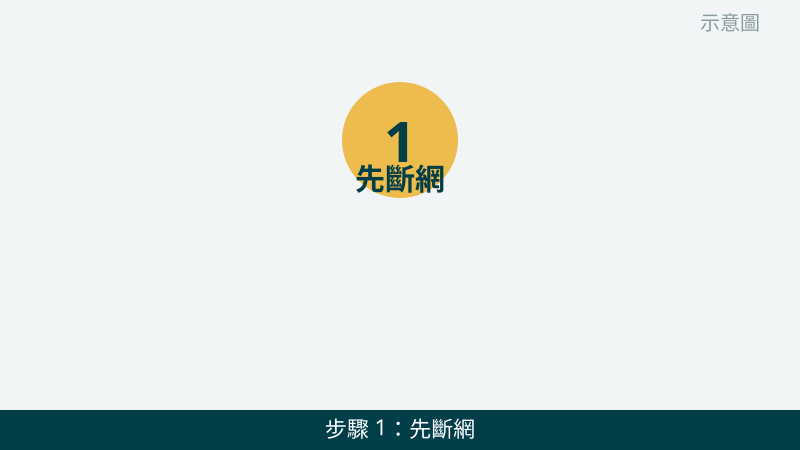
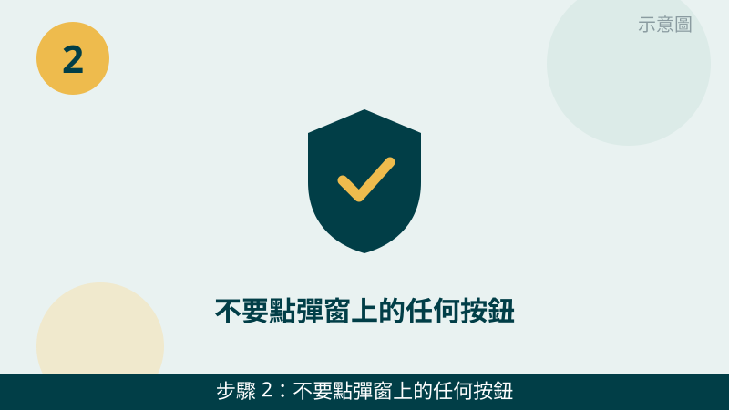
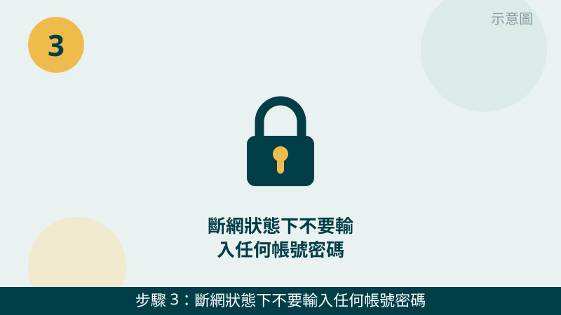
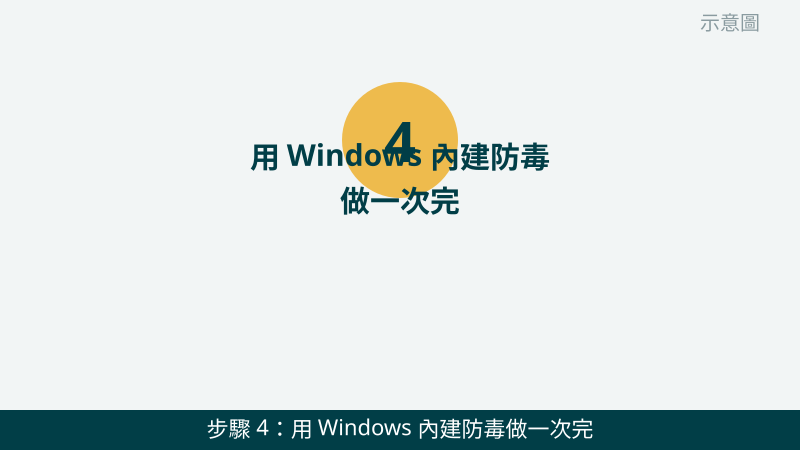
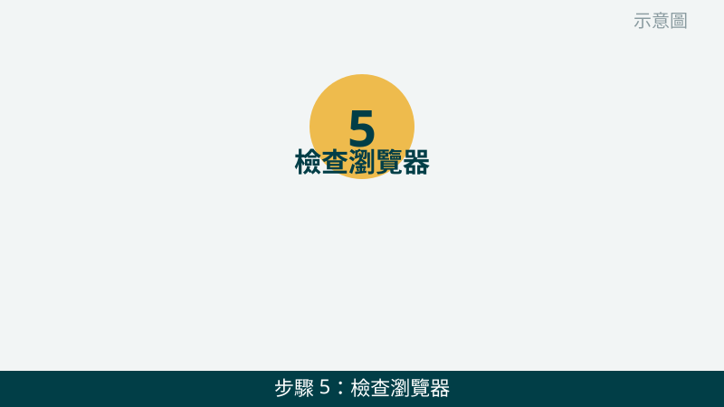
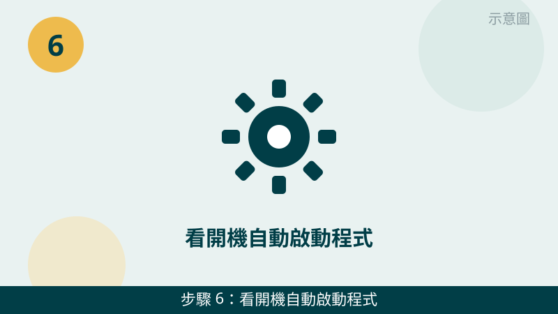

瀏覽器一直跳出廣告、首頁被換成不認識的網站、畫面還警告您電腦中毒，確實會讓人很慌。但請先放心：很多彈窗本身就是詐騙，目的是要您點按鈕、打電話或付錢。先冷靜照順序處理，不要照著彈窗說的做。
開始之前先跟您說明一個判斷原則：「真的系統警告不會逼您立刻付錢」。凡是寫著倒數計時、警告音效、要您立刻打電話或下載東西的彈窗，都先當成可疑的來處理，不要急著配合。
👨👩👧 家長看這裡：小孩亂點廣告彈窗，電腦中毒了怎麼辦？
孩子亂點廣告彈窗很常見，先別急著重灌——孩子的作業、照片還在電腦裡的話，重灌前請先拍照傳 LINE 問我們，錯誤的操作可能讓資料救不回來。照下面 6 步先斷網、掃描，彈窗畫面拍下來傳 LINE，老闆免費幫您看一眼再決定怎麼處理。
彈窗畫面先傳給我們看
把彈窗的完整畫面、瀏覽器首頁和擴充功能清單拍下來傳 LINE，是不是詐騙彈窗、該往哪個方向清，通常一看就有方向。先免費評估、報價透明，確認後再預約維修。
電腦中毒、廣告彈窗自救檢查清單（由簡到難）
- 1. 先斷網：拔掉網路線或關掉 Wi-Fi。疑似中毒的第一步是先讓電腦離線，這樣可疑程式就比較難再對外連線或下載新東西。請拔掉網路線，或在右下角網路圖示把 Wi-Fi 關掉。怎麼判斷：斷網後彈窗如果還是一直跳，代表問題多半已經在本機，不只是網頁廣告。

示意圖（非官方截圖） - 2. 不要點彈窗上的任何按鈕，也不要打彈窗上的電話。彈窗上的「立即修復」「確定」「關閉」都可能是陷阱，連右上角的叉叉都要小心，最好直接用工作管理員把瀏覽器整個關掉。怎麼判斷：彈窗寫得越急、還配警告音效，越不要照做；真正的系統警告不會這樣逼您打電話或付錢。

示意圖（非官方截圖） - 3. 斷網狀態下不要輸入任何帳號密碼。在還沒確認乾淨之前，請不要在這台電腦上登入信箱、銀行或購物網站，也不要輸入信用卡資料或驗證碼。怎麼判斷：如果您已經在彈窗出現後輸入過帳號密碼，請先拍照問我們，之後再從另一台乾淨的裝置處理密碼的事，不要在這台電腦上繼續輸入。

示意圖（非官方截圖） - 4. 用 Windows 內建防毒做一次完整掃描。請開啟「Windows 安全性」→「病毒與威脅防護」→ 選「完整掃描」，讓它慢慢掃完，不要中途一直開其他程式干擾。怎麼判斷：掃出威脅並清除後，彈窗有沒有跟著消失；掃完還是會跳，代表還有東西沒清掉，再往下查。

示意圖（非官方截圖） - 5. 檢查瀏覽器：首頁、擴充功能和通知權限。請打開瀏覽器設定，看首頁是不是被換成不認識的網站，把它改回您原本用的首頁；再到擴充功能清單，把不認識、沒印象裝過的項目先停用，拿不準的先拍照問我們再決定要不要移除。怎麼判斷：停用某個擴充功能後彈窗就不跳了，那個項目就很可疑；改回首頁又被改回去，代表背後還有東西在動手腳。

示意圖（非官方截圖） - 6. 看開機自動啟動程式，有沒有不認識的項目。請在工作列按右鍵 → 開啟「工作管理員」→ 點「啟動」頁籤，看有沒有名字很奇怪、發行者不明的程式跟著開機跑。怎麼判斷：不認識的項目請先拍照問我們，不要自己亂刪系統檔案或亂改設定；如果掃描後彈窗還是回來，這一步的畫面就是很重要的線索。

示意圖（非官方截圖）
別再自己試了
- 檔案突然被加密、跳出勒索訊息要求付錢——請立刻停手、不要付錢、不要照對方指示操作
- 彈窗要您打電話、遠端操控電腦或下載它指定的軟體時，不要配合
- 掃描完彈窗還是會跳、首頁改回來又被改回去時，不要再亂裝其他清理軟體
- 想自己刪系統檔案或改登錄檔但不確定——請先拍照問我們，不要硬改
- 懷疑銀行或重要帳號已經外洩時，不要在這台電腦上繼續輸入帳號密碼
常見問題
彈窗說電腦中毒，要我打電話給客服，是真的嗎？
絕大多數是假的。真正的 Windows 系統警告不會用彈窗逼您立刻打電話、付錢或下載東西，越是寫得很急、還配上警告音效的，越可能是詐騙彈窗。請不要打彈窗上的電話、不要照著對方指示操作，先斷網、把彈窗畫面拍照傳給我們確認，評估不收費。
用 Windows 內建防毒掃完，就代表乾淨了嗎？
不一定。完整掃描能抓到很多常見威脅，但如果彈窗還是會跳、瀏覽器首頁改回來又被改回去，或有檔案被加密，就代表問題還沒完全清除。這時候請不要再亂裝其他清理軟體，先停手、拍照問我們，檢測後會先說明狀況和報價，再由您決定。
瀏覽器首頁被改回來又被改回去，該怎麼辦？
首頁一直被改回去，通常是還有不認識的擴充功能或開機自動啟動程式在背後動手腳，只改首頁是不夠的。請先把擴充功能清單和開機啟動清單的畫面拍下來傳給我們，我們會幫您看是哪一個項目在作怪；拿不準的項目請先不要亂刪系統檔案，先拍照問比較安全。
相關文章：電腦變慢卡頓、開機很久怎麼辦、自救百科總覽